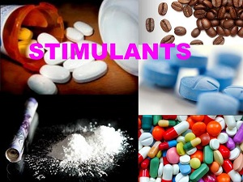

Stimulants are psychoactive drugs that increase alertness and metabolism, cause hyperactivity, stimulate sexual arousal, and repress hunger. Some stimulants prevent the breakdown of neurotransmitters causing neurons to fire continuously. Other stimulants mimic the effects of neurotransmitters, resulting in an increase of neural stimulation in the CNS. Most stimulants are available only through prescriptions from medical doctors. The two most common types of illegal stimulants are cocaine and amphetamines.
